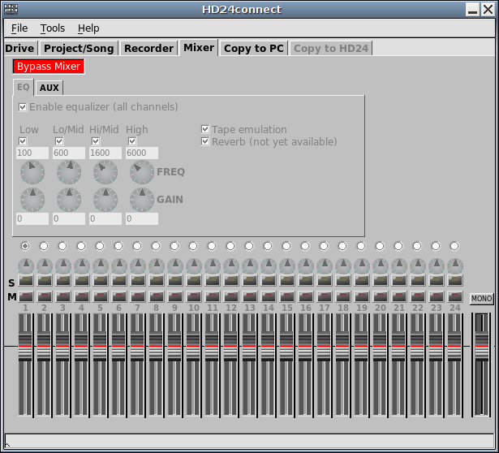
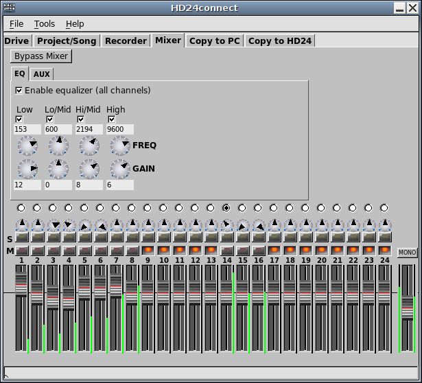

The mixer permits you to create a realtime mixdown of the audio being previewed.

As signal processing requires a fair amount of computing power, most of the signal rocessing is bypassed by default. In this mode, only the master fader is active and playback is done in mono. This permits even computer systems with modest processing power to still play back audio.

After clicking the Bypass button, the signal processing capabilities of the mixer are enabled. In this initial version, the mixer only supports level faders, left/right panning and equalizing. Solo and Mute buttons are available to single out individual tracks. At any given moment, the equalizer works on the active track; you can select which track to equalize using the radio buttons. Using the Solo button of a track also automatically activates that track.
Once you are satisfied with a mix, you can save it with menu choice File->Mixer->Save settings to file.... This creates a file which contains all mixer settings of all audio channels*.
To load back previously saved mixer settings, use File->Mixer->Load settings from file.... This is especially useful if you wish to apply the same mix to several different songs, or if you want to work on a mix later on. Mixer files normally contain all settings of all channels, and as such loading back the mixer settings results in a full recall of the original mix.
As mentioned, the mixer requires a fair amount of processing power to perform signal processing. To minimize the amount of processing power required, you can mute any channels that don't contain any sound and/or disable any equalizers that are not in use.
The mixer has two operating modes: The first mode is to perform mixes in realtime, whereas the second mode performs a mixdown during a file transfer. To permit working on modest hardware, realtime mixes are always done at a maximum of 48 kHz, whereas transfer-time mixing renders a mix at full rate and resolution. Transer-time mixes are not required to operate in realtime. This means that during transfer-time mixing, there is no limit on the amount of equalizers, effects, resolution or sample rate. Of course, performing a mix during a transfer will slow down the transfers in question, depending on the speed of your processor and the complexity of the mix.
By default, HD24connect makes all 24 HD24 channels as well as the master mix available to JACK. This permits streaming audio from HD24connect to external, JACK-enabled audio software. For more information about this, read the section on cross-application audio.
A (stereo only) mixdown can be created from the Transfer to PC tab by selecting Mixer Left/Right as the transfer source.
To bounce tracks to free up more tracks on the HD24, simply create a mixdown of multiple tracks, transfer a mixdown of those tracks to file and copy back that mixdown to the recorder. If you wish to preserve the original tracks, you can create an entirely new song for this purpose, allowing you to leave the original recording untouched.
* Mix files are text-based. This means you can use a text editor to edit these files and/or strip out channels that do not interest you. When loading back such altered files, only mixer settings defined in the text file will be recalled.